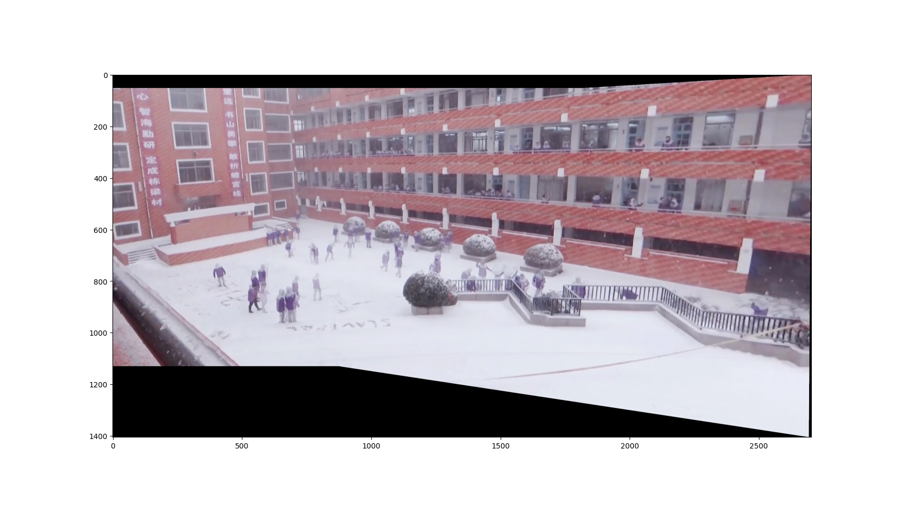
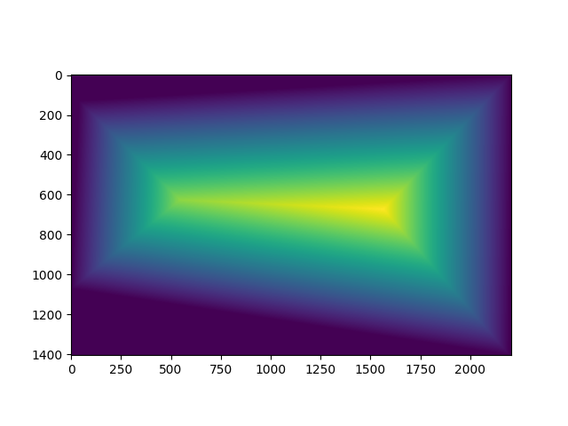
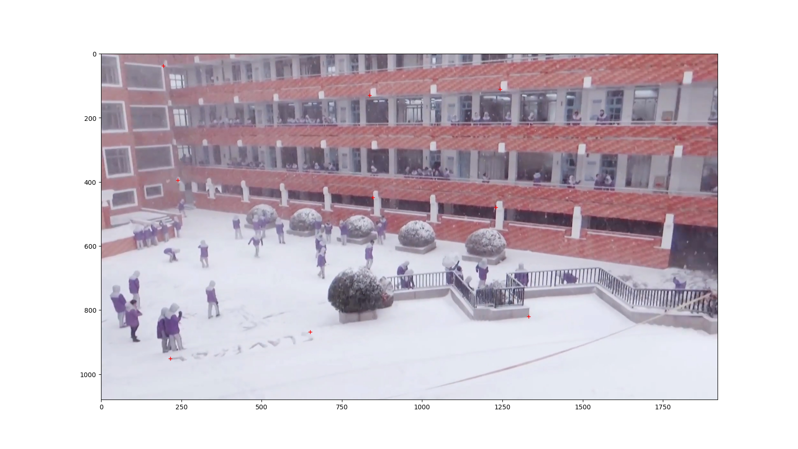
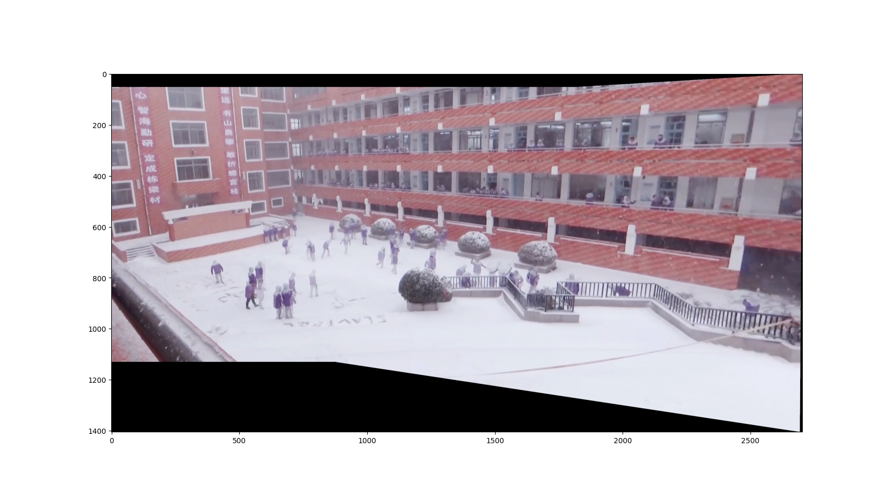
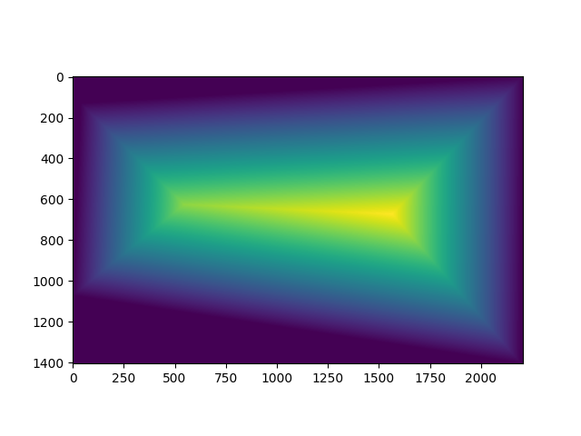
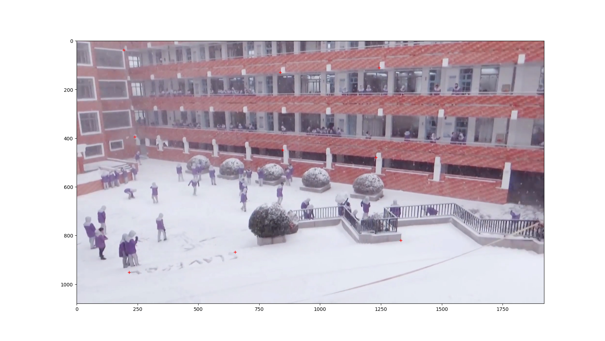
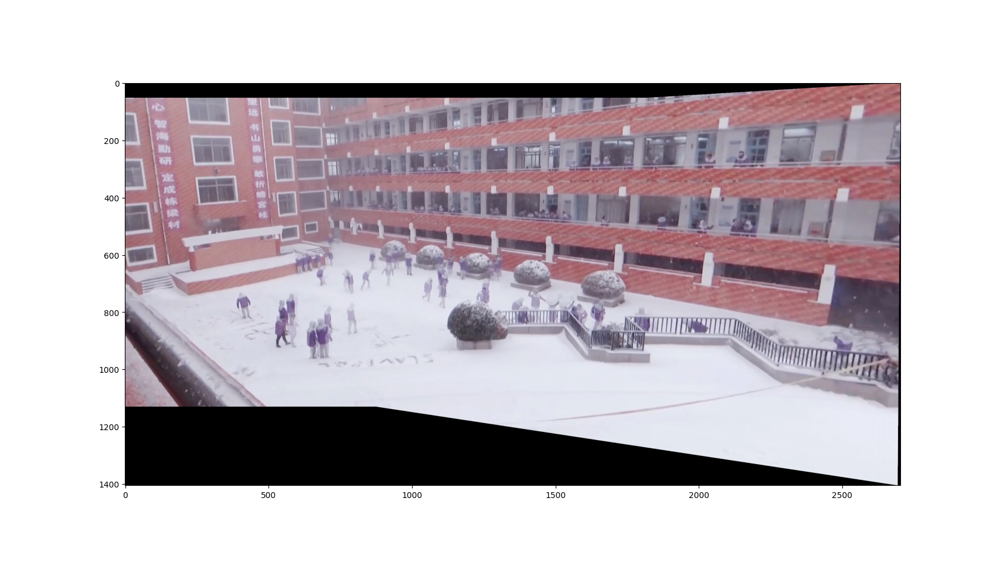
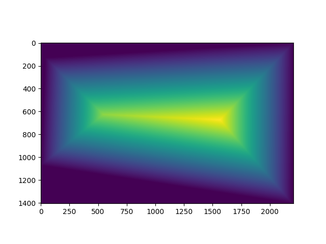
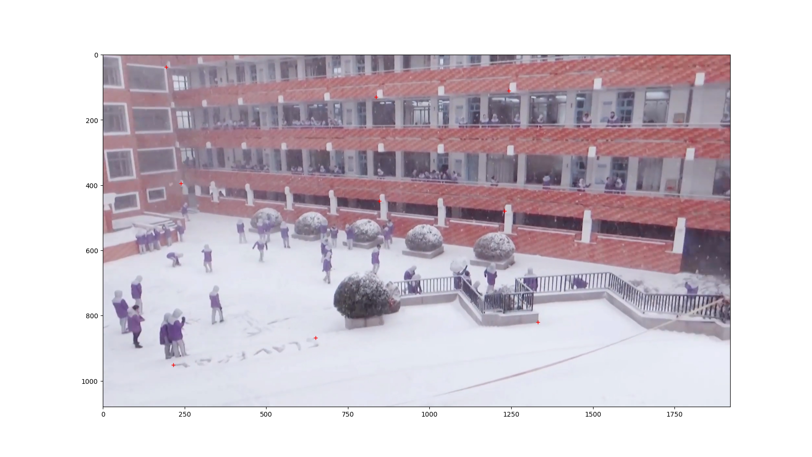

The images used in the first part of this project were taken from a video on bilibili. In fact, since I had a midterm exam shortly before the deadline, I didn't have enough time to work on this part, and I might take the photos myself in the second part of the submission.
Recover homographies requires calculating the homography matrix H based on two sets of points. There is a detail here that took me some time to figure out. For the coordinates [wx', wy', w], w is linearly related to the coordinates [x, y, 1] before transformation. After normalizing to ordinary coordinates, it is easy to find that x, y and x', y' are not linearly related. Therefore, it is necessary to perform some transformations on the equations in order to solve them.
The known data are the common coordinates of the two sets of points. We only need to replace w in the equation with the bottom line of the matrix multiplication, and then move the terms to the left side of the equation to get an equation that is linear with respect to the eight variables in the homography matrix. I use the function lstsq to get an approximate solution.
Deforming the image is very similar to the third project. However, we must first apply the forward transform to the four corners to get the extent of the final image. After obtaining the transformed dimensions, we can then apply the inverse transform to get the coordinates of the transformed pixels in the original image, and interpolate. There is a gap between the transformed quadrilateral and its rectangular border, which is handled here by setting it to 0 to facilitate visualization.
During the debugging process, I found such a situation. When the deformation is extreme, for example, when trying to change a rectangle with a large tilt angle back to its original state, some points will have w<0, and these points will appear in the wrong position. Of course, there is no information in those positions, so other points with w>0 are not affected. I consulted some materials and did some thinking on my own, and found that perspective projection sometimes transforms some images to the position behind the camera. In other words, we can't see them after the transformation, and we should remove them from the transformed image. However, the midterm exam made me lack time to do this. It should be relatively easy to give a mask in the original image with w>0.
I have a little trick for this part to make it easier to code. Sometimes some points have negative numbers in their coordinates. We can easily get an offset by transforming the coordinates of the four corners. Based on this, we can write the translation matrix. We do matrix multiplication of the homography matrix and the translation matrix, and use the new matrix to transform the coordinates, which is quite natural to achieve the translation.
Restoring the rectangle does not contain much content in theory or code, but is used to verify the effect of the above homography matrix calculation and application. The results are as follows.
The overall mixed image is similar to the third project. In the specific implementation, I used some small tricks. In order to make the image smooth, the mask should be gradient. I used the cv2.distanceTransform function. This function is invalid when the mask array given by cv2.fillConvexPoly is exactly the entire rectangle. I added a certain padding around the array before processing and removed it when returning, so as to get the correct output. Of course, if I directly enlarge the image and mask to the same size as the output image, I should not encounter this problem, which is at the cost of higher space overhead.
We have two options, one is to normalize the mask before superimposing the image, and the other is to normalize the whole image after superimposing the image. I initially fell into the former idea, but because my mask size is the same as the size of each image after transformation, array indexing and slicing will become very complicated. Superimposing the weight of the mask while superimposing the image, and finally normalizing the whole image is more convenient for the current implementation, and it is also easy to rewrite it in the future to achieve simultaneous mixing of more images.
I have not yet added any frequency-decoration to the image, I think the gradient that relies solely on distance is satisfactory.



For Harris corner detection, I used the sample code provided on the homework website. The following are the points of interest given by the sample code. Obviously, these points are too dense to be used directly for feature detection. In addition, since the selected pictures are cut from the video, the intensity of the subtitles is too high, so I truncated it to make the intensity map better visualized.
The idea of adaptive non-maximum suppression is a little difficult to understand, but it is not complicated to implement. Specifically, we calculate the shortest distance from a corner point to a nearby point with relatively high intensity, and then sort in descending order according to this distance, and select a certain number of points from front to back. This method can reduce the number of points, but it will not completely avoid concentrated points. This is because if the intensity difference of some nearby points is not large, no suppression will occur. We must tolerate this situation, otherwise it is likely that the local maximum points in the two images will be different due to slight differences in illumination, and a proper match cannot be obtained.
The feature descriptors are downsampled from the neighborhood of the feature points. I normalized the feature descriptors to make them stable to perturbations such as lighting. I also implemented rotationally invariant feature descriptor extraction, see the last section.
The method of feature matching is to calculate the distance between feature descriptors. We calculate the nearest neighbor and the next nearest neighbor in the other image for each point's corresponding descriptor, and compare the ratio of their distances with the threshold to control the matching. The paper recommends using a threshold of around 0.8 to ensure a balance between the number of points and accuracy. The situation in the experiment is that there are still a few mismatches around 0.8, and there is basically no mismatch problem when 0.5 is used as the threshold. Despite this, my pictures contain subtitles, and those subtitles happen to match. I still need some way to solve this problem.
RANSAC can improve the robustness of the match. We repeatedly randomly select 4 points to calculate the homography matrix, count the points that are correctly converted, and finally select the matrix with the best effect. In addition, this algorithm is also helpful for solving image matching with subtitle. I made a slight modification to the algorithm to do this. When selecting points, I added a constraint on the minimum distance between points to ensure that points can be selected from a larger range, which reduces the probability that several points are all taken from subtitles. Of course, we can also downsample the image and directly perform a comparison similar to the first project, but this is less efficient and more complicated to implement.
Without RANSAC, it would be difficult to automatically remove these subtitles, since the number and strength of matches produced by the subtitles are likely to be higher than those produced by the image. Of course, simply cutting off the bottom edge of the image would solve the problem. However, I think that these prior constraints on the points also avoid spending too much time on bad choices. Even if the selected matches are all correct, they are too close to get good results.
In order to obtain a feature descriptor with rotation invariance, I calculated the local gradient direction according to the method in the paper, and then rotated the previously obtained feature descriptor. There is a problem here, that is, the coordinate system for calculating the gradient is different from the coordinate system for rotation, and the negative number of the angle must be used. I chose to rotate a previous image to demonstrate the effectiveness.
Because PS left a white border after rotating the image, the intersection on one side of the image is more obvious.
My favorite part about this experiment is that we were able to achieve great results by making small improvements over time.